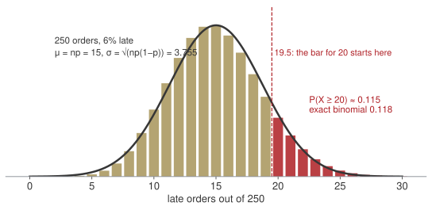
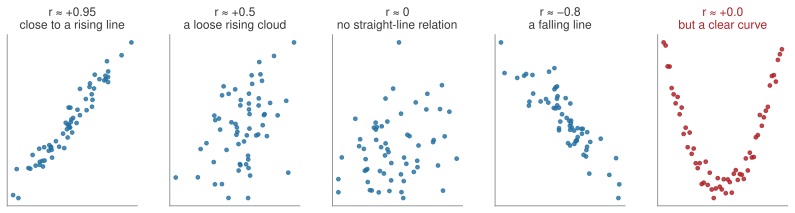

How sure are we of that number?
Week 8 · Monday 16 November 2026 · 10:00–13:00 · online
MBA03 Research & Quantitative Business Methods · European School of Economics, Florence
Last Monday, in one minute
Block AA number with its sharesMean and spread: a list divides by n - 1, a random variable weights by the shares.
Block BName the shapeHow many of these n: binomial. How many in this interval: Poisson, \mu first.
Block CThe bellSketch, standardise, table, sentence. Backwards for a guarantee: area → z → x.
Block DDecide on two numbersExpected value for a repeated decision; spread for a one-off.
Last week the bell gave us shares of bikes. Today it tells us how far a number from data can be from the truth.
Homework 7 Corrected together, step by step
H1: a list, then a random variable
(a) Walk-ins: 12, 9, 15, 10, 14, 12.
| x | x - \bar{x} | (x - \bar{x})^{2} |
|---|---|---|
| 12 | 0 | 0 |
| 9 | −3 | 9 |
| 15 | 3 | 9 |
| 10 | −2 | 4 |
| 14 | 2 | 4 |
| 12 | 0 | 0 |
| 72 | 0 ✓ | 26 |
\bar{x} = \frac{72}{6} = \textbf{12}
s^{2} = \tfrac{26}{5} = 5.2, \;\; s = \textbf{2.28}
(b) Bookings a day, shares .10 / .25 / .30 / .25 / .10: they add to 1 ✓.
E(x) = .10 + .50 + .90 + 1.00 + .50 = \textbf{3.0}
\sigma^{2} = 4(.10) + 1(.25) + 0
+ 1(.25) + 4(.10) = 1.30
\sigma = \sqrt{1.30} = \textbf{1.14}
Reading. Three bookings a day, give or take one.
The slip: dividing the list by 6. A list from data divides by n - 1 = 5; a random variable never divides, the shares already do it.
H2: twenty quotes, one in five becomes a sale
(a) Binomial: 20 quotes, each sale or no sale, the same p = .2, each alone.
(b) Exactly 4, the four steps:
\binom{20}{4} = \frac{20 \cdot 19 \cdot 18 \cdot 17}{4 \cdot 3 \cdot 2 \cdot 1} = 4{,}845
P(4) = 4{,}845 \times .2^{4} \times .8^{16}
= 4{,}845 \times .0016 \times .02815 = \textbf{.218}
(c) P(0) = .8^{20} = \textbf{.012}; at least one: 1 - .012 = \textbf{.988}.
(d) np = 20 \times .2 = \textbf{4} sales; \sigma = \sqrt{20 \times .2 \times .8} = \sqrt{3.2} = \textbf{1.79}.
Board sentence
Twenty quotes bring four sales, give or take two; a week with no sale at all is about one in a hundred.
H3: returns at a rate, rescaled twice
(a) Five a week, five working days: one a day. \mu = 5 \times \tfrac{1}{5} = 1 first.
P(0) = e^{-1} = \textbf{.368}
P(1) = \frac{1^{1} e^{-1}}{1!} = \textbf{.368}
P(\ge 2) = 1 - .368 - .368 = \textbf{.264}
(b) Two days: \mu = 5 \times \tfrac{2}{5} = 2.
P(2) = \frac{2^{2} e^{-2}}{2!} = \frac{4 \times .1353}{2} = \textbf{.271}
(c) A count over time at a constant rate, with no fixed number of trials and no ceiling: Poisson. A binomial needs an n.
The slip: \mu = 5 for one day. Rate × interval, every time, before any number.
H4 (a), (b): charging time, forwards
X \sim N(240,\, 20) minutes. Sketch first, every time.
(a) More than 270: the right tail.
z = \frac{270 - 240}{20} = 1.50 \qquad \text{table: } .9332
P(X > 270) = 1 - .9332 = \textbf{.067}
About seven charges in a hundred take more than four and a half hours.
(b) Between 220 and 260: z = -1 and z = +1.
P = .8413 - .1587 = \textbf{.683}
One σ each side: the 68% of the empirical rule, no table needed.
H4 (c): the guarantee on a time rounds up
“Fully charged in X minutes”, and 5% may take longer. The bad tail is on the right: 95% to the left.
z = +1.645
x = \mu + z\,\sigma = 240 + 1.645 \times 20 = 272.9
A promise on a time rounds up: print 275 minutes (273 is also right).
The slip: 240 - 32.9 = 207. That promises a charge faster than most batteries manage. Draw the sketch: which tail is the bad one?
Board sentence
Print “fully charged in 4 hours 35 minutes”. About one charge in twenty takes longer — the share the Board accepted.
The same move, in euros: the worst day at 95%
Arno Bikes keeps its cash buffer in a fund. The value moves every day: on average by zero, standard deviation €2,000, bell-shaped.
Bet before we compute
What loss will we not exceed on 19 days out of 20? Write a number in euros.
The bad tail is the left one: the worst 5% of days.
x = \mu + z\,\sigma = 0 - 1.645 \times 2{,}000 = \textbf{−€3,290}
Reading. On 95 days in 100 the fund loses less than €3,290; on about one day in twenty it loses more.
This number has a name in finance: the maximum loss at 95%. It is last week’s guarantee, with euros instead of kilometres.
Same four steps, backwards. Only the units changed.
H5: two couriers, a tree, two numbers
Local is a random variable: €30 with share .9, €30 + €60 = €90 with share .1.
E = .9 \times 30 + .1 \times 90 = 27 + 9 = \textbf{€36}
Against Fast’s €40: €4 saved a delivery.
\sigma^{2} = .9\,(30 - 36)^{2} + .1\,(90 - 36)^{2}
= 32.4 + 291.6 = 324
\sigma = \sqrt{324} = \textbf{€18}
(d) 400 deliveries: $400 = $ €1,600 a month.
Board sentence
Use Local for the monthly volume: €1,600 saved, and on 400 deliveries the late ones average out. Use Fast for the delivery to our most important customer: one late parcel there costs more than €4 of saving.
The slip: €60 as the whole cost of a late delivery. The €30 is paid anyway.
The memo: what range do we print?
| below it, σ = 8 | below it, σ = 12 | |
|---|---|---|
| 85 km | 27% | 34% |
| 80 km | 11% | 20% |
| 76 km | 4% | 12% |
| 75 km | 3% | 11% |
z = (x - 90)/8, then the table; the same with 12.
What we look for
- at least two candidates, each with its share of disappointed riders
- one recommendation (76 or 75 km) and its cost in complaints
- the line on σ = 12: the same 5% would mean printing 70 km — a less consistent battery costs 6 km on the box
- no formulas; 150–250 words
The best memos say what the spread costs: consistency is worth kilometres on the box.
Where we are
| Wk | Date | What you can do by hand |
|---|---|---|
| 6 | 5 Nov | count, condition, update ✓ |
| 7 | 9 Nov | a number with its shares; three shapes; decide ✓ |
| 8 | 16 Nov | how sure: the standard error, an interval, a test; one line through points |
| 9 | 23 Nov | read a regression output; a trend through time; this month from last month |
| 10 | 30 Nov | review; the in-class quiz |
Last week: from a known shape to a share of bikes.
Today the arrow turns round: from one sample back to the number we do not know, with an honest error bar.
Blocks A–C are exactly what the final asks about intervals and tests. Block D opens next week.
Today’s question
Arno Bikes, this month
Engineering measured 200 bikes and found 90 km. The founder asks: is the true average 90? A new battery batch looks a bit worse. Returns seem lower since we dropped Ionix. And does the range change with the weather?
A number from data is a random variable: another sample would give another number. Today we measure how much it wobbles.
One idea runs the whole morning: the standard error, the σ of a number computed from data.
Four questions from the founder
Block AWill we pay the courier’s penalty?a count read as a bell · simulation · standard error
Block BHow far off is our 90 km?confidence interval · sample size
Block CHas dropping Ionix cut returns?a test on a proportion · p-value
Block DDoes range depend on the weather?correlation · least-squares line · R²
Block A · a count read as a bell, the standard error Will we pay the courier’s penalty?
250 orders this month, 6% ship late
Each order ships late with p = .06, alone: binomial, n = 250. The courier charges a penalty in a month with 20 or more late orders.
Bet before we compute
How often is a month a penalty month? Write a share.
Last week’s four steps would need P(20) + P(21) + \dots + P(250). Nobody does that by hand.
Mean and spread, we already have them:
\mu = np = 250 \times .06 = \textbf{15 late orders}
\sigma = \sqrt{np(1-p)} = \sqrt{250 \times .06 \times .94}
= \sqrt{14.1} = \textbf{3.755}
And last week’s app showed it: with many trials the bars become a bell. Read the count as N(15,\, 3.755).
It works when np \ge 5 and n(1-p) \ge 5: here 15 and 235.
Twenty or more late: the four steps on a count

The bars are the exact binomial, the curve the bell. The bar for 20 starts at 19.5.
1. Sketch. “20 or more” starts at 19.5: a bar spans half a unit each side.
2. Standardise. z = \dfrac{19.5 - 15}{3.755} = 1.198 \approx \textbf{1.20}
3. Table. P(X \ge 20) = 1 - .8849 = \textbf{.115}
4. Sentence. A penalty month comes about one month in nine.
The exact binomial, summed by a computer: .118. The bell is off by three in a thousand.
When there is no formula: simulate
Describe one month honestly: 250 orders, each late one time in sixteen or so. Let the computer play that month a thousand times and count the late orders each time.
About 118 of the thousand months have twenty or more late: the share the bell estimated as .115.
Why a manager cares. A formula needs a clean model. A simulation needs only one honest description of a month. Late rates that change with the weather, faults that come in batches: no formula, but the simulation still runs.
This is called Monte Carlo: when you cannot compute it, play it a thousand times.
Try it: play a thousand months
Run 10 months, then 1,000: the bars settle onto the bell. Count the months with 20 or more late.
One bike, or the average of sixteen?
One bike’s range: N(90,\, 8). A single bike can easily do 82 or 98.
Now take 16 bikes and average their ranges.
Bet before we compute
The average of 16 bikes: give or take how many km? Still 8, less, or more?
Averaging cancels the luck: a bike above 90 meets a bike below. The average wobbles less than one bike.
How much less is one formula:
SE = \frac{\sigma}{\sqrt{n}} = \frac{8}{\sqrt{16}} = \frac{8}{4} = \textbf{2 km}
This is the standard error: the σ of a number computed from a sample.
Above 94 km? One bike: z = 4/8 = 0.50, share .31. The average of 16: z = 4/2 = 2.00, share .023. Same four steps, with SE in place of σ.
Many samples of sixteen pile into a narrow bell
The standard error: precision is bought with data
| bikes tested n | SE = 8 / \sqrt{n} |
|---|---|
| 1 | 8 km |
| 16 | 2 km |
| 64 | 1 km |
| 256 | 0.5 km |
Four times the bikes halves the error. Halving it again costs four times more.
The central limit theorem, in one line: for a sample of about 30 or more, the average is bell-shaped whatever the data look like.
- The data do not become a bell; their average does.
- σ is the spread of one bike; \sigma/\sqrt{n} is the spread of the average.
- A large sample of the wrong bikes is still wrong: the sample must be random.
Board sentence
Of 250 orders, expect 15 late, give or take four; a penalty month comes about once in nine. And any average we quote has its own error: the spread divided by the square root of the sample.
Four questions from the founder
Block AWill we pay the courier’s penalty?a count read as a bell · simulation · standard error
Block BHow far off is our 90 km?confidence interval · sample size
Block CHas dropping Ionix cut returns?a test on a proportion · p-value
Block DDoes range depend on the weather?correlation · least-squares line · R²
Block B · the confidence interval How far off is our 90 km?
The new battery batch: 64 bikes, 88.5 km
A new batch of batteries arrives. Engineering tests 64 bikes: average 88.5 km. From two years of tests, σ = 8 km.
Bet before we compute
Write a range of km that you are 95% sure contains the true average of the new batch.
The recipe: estimate ± margin, and the margin is z standard errors.
\bar{x} \pm z\,\frac{\sigma}{\sqrt{n}}
SE = \frac{8}{\sqrt{64}} = \frac{8}{8} = 1 \text{ km}
95%: the middle 95% of a bell lies within z = 1.96.
88.5 \pm 1.96 \times 1 = 88.5 \pm 1.96
\textbf{86.54 to 90.46 km}
Reading. The new batch’s true average is somewhere between 86.5 and 90.5 km. 90 is inside: the data do not show that the new batch is worse.
90% or 95%: the same recipe, a different z
| confidence | z | interval |
|---|---|---|
| 90% | 1.645 | 88.5 \pm 1.645: 86.86 to 90.15 |
| 95% | 1.960 | 88.5 \pm 1.960: 86.54 to 90.46 |
| 99% | 2.576 | 88.5 \pm 2.576: 85.92 to 91.08 |
More confidence, a wider interval. The only way to be sure and narrow is more data.
Choose the right one, and say why the others are wrong. The 95% interval is:
- 86.86 to 90.15 — that is z = 1.645: the 90% interval
- 72.82 to 104.18 — 1.96 \times 8: forgot the \sqrt{n}, the spread of one bike
- 86.54 to 90.46 ✓
- 88.26 to 88.75 — divided by n, not \sqrt{n}
Three wrong roads, every time: the wrong z, no \sqrt{n}, n instead of \sqrt{n}.
Twenty intervals, and the one that misses
What “95% confident” means, and what it does not
Right. If we tested 64 bikes again and again and built the interval each time, about 19 intervals in 20 would contain the true average. Ours is one of them; we do not know which.
Wrong. “95% of the bikes do between 86.5 and 90.5 km.” No: one bike moves by ±8 km. The interval is about the average, not about a bike.
Board sentence
The new batch averages between 86.5 and 90.5 km, at 95% confidence. That includes our 90: so far, no evidence the new batch is worse. To know to within one km, we need more bikes.
Try it: draw a hundred intervals
Draw 100 at 95%: about five miss. Switch to 90%: about ten. Then cut n to 16 and watch every interval get twice as wide.
How many bikes for ±1 km?
The Board wants the average known to within 1 km, at 95%. How many bikes do we test?
Set the margin to 1 and solve for n:
1.96 \times \frac{8}{\sqrt{n}} = 1 \;\Rightarrow\; \sqrt{n} = 1.96 \times 8 = 15.68
n = 15.68^{2} = 245.9 \;\Rightarrow\; \textbf{246 bikes}
Always round up: 245 bikes would give a margin a hair above 1 km.
n = \left(\frac{z\,\sigma}{E}\right)^{2}
E is the margin we want. Half the margin, four times the bikes: ±0.5 km needs 984.
Decide the margin before the data come in. It is a budget line: each bike tested costs a day on the loop.
Four questions from the founder
Block AWill we pay the courier’s penalty?a count read as a bell · simulation · standard error
Block BHow far off is our 90 km?confidence interval · sample size
Block CHas dropping Ionix cut returns?a test on a proportion · p-value
Block DDoes range depend on the weather?correlation · least-squares line · R²
Block C · the hypothesis test Has dropping Ionix cut returns?
8% of bikes came back. Since spring: 22 of 400
For years, 8% of bikes sold came back under warranty. In spring we dropped Ionix (Homework 6). Since then: 400 bikes sold, 22 returned — 5.5%.
Bet before we compute
Is 5.5% proof that returns changed, or could it be luck? Write “changed” or “luck”.
A test starts by assuming nothing changed and asks how surprising the data are under that assumption.
- H_0: p = .08 — nothing changed
- H_1: p \neq .08 — the rate changed, up or down
Two-tailed: a change in either direction would matter.
H_0 is the boring story. We drop it only if the data make it hard to believe.
The test in six steps
| step | what you write | our returns |
|---|---|---|
| 1 | the hypotheses | H_0: p = .08 · H_1: p \neq .08 |
| 2 | the level | 5%, two tails: cut-offs z = \pm 1.96 |
| 3 | the standard error under H_0 | \sqrt{\dfrac{.08 \times .92}{400}} = \sqrt{.000184} = .01356 |
| 4 | the test statistic | z = \dfrac{.055 - .08}{.01356} = \dfrac{-.025}{.01356} = \mathbf{-1.84} |
| 5 | the p-value | 2 \times P(z < -1.84) = 2 \times .0329 = \mathbf{.066} |
| 6 | decision and sentence | .066 > .05: do not reject H_0 |
z is last week’s z: how many standard errors the data sit from what H_0 says.
The p-value is a tail, on both sides
Same 5.5%, twice the bikes: another verdict
The p-value in words. If nothing had changed, a sample as far from 8% as ours — either way — would turn up 6.6 times in 100. Not rare enough: luck is still a fair explanation.
Wait until 800 bikes, 44 returned: still 5.5%.
SE = \sqrt{\frac{.08 \times .92}{800}} = .00959
z = \frac{-.025}{.00959} = -2.61
p = 2 \times .0045 = \textbf{.009} < .05: \textbf{reject } H_0
Two ways to be wrong.
- Type I: reject H_0 when nothing changed — we celebrate a luck. Its chance is the 5% we chose.
- Type II: keep H_0 when the rate did change — with 400 bikes, we may simply not have enough data yet.
Board sentence
Returns fell from 8% to 5.5%, but 400 bikes are not enough to rule out luck (p = .066). On 800 bikes at the same rate the drop would be clear. Keep counting until the end of the year.
A test and an interval say the same thing
Back to the battery batch: 64 bikes, 88.5 km, σ = 8. Is the true average still 90?
H_0: \mu = 90 · H_1: \mu \neq 90
z = \frac{\bar{x} - \mu_0}{\sigma / \sqrt{n}} = \frac{88.5 - 90}{1} = -1.50
p = 2 \times P(z < -1.50) = 2 \times .0668 = \textbf{.134}
.134 > .05: do not reject.
The 95% interval was 86.54 to 90.46, and 90 is inside.
- 90 inside the 95% interval ⟺ the two-tailed test at 5% does not reject 90.
- 90 outside ⟺ it rejects.
Two views of one calculation. The interval says where the truth may be; the test says whether one particular value survives.
Four questions from the founder
Block AWill we pay the courier’s penalty?a count read as a bell · simulation · standard error
Block BHow far off is our 90 km?confidence interval · sample size
Block CHas dropping Ionix cut returns?a test on a proportion · p-value
Block DDoes range depend on the weather?correlation · least-squares line · R²
Block D · correlation and the least-squares line Does range depend on the weather?
Five test days, five temperatures
The same bike on the same loop, on five days:
| temperature x (°C) | range y (km) |
|---|---|
| 0 | 80 |
| 5 | 84 |
| 10 | 89 |
| 15 | 90 |
| 20 | 97 |
Bet before we compute
How many km does one more degree add? Write a number.

The points climb from left to right: a positive relation, close to a straight line. The correlation r measures how close, from −1 to +1.
Correlation: one number for the shape of the cloud

r near +1 or −1: the points sit close to a line. r near 0: no straight-line relation — which is not the same as no relation at all. And a strong r is not a cause: ice cream and sunburn rise together because of the sun.
The line by hand: five rows, two sums
\bar{x} = 50/5 = 10 °C, \quad \bar{y} = 440/5 = 88 km.
| x - \bar{x} | y - \bar{y} | product | (x - \bar{x})^{2} |
|---|---|---|---|
| −10 | −8 | 80 | 100 |
| −5 | −4 | 20 | 25 |
| 0 | 1 | 0 | 0 |
| 5 | 2 | 10 | 25 |
| 10 | 9 | 90 | 100 |
| 200 | 250 |
b = \frac{\sum (x - \bar{x})(y - \bar{y})}{\sum (x - \bar{x})^{2}} = \frac{200}{250} = \textbf{0.8}
a = \bar{y} - b\,\bar{x} = 88 - 0.8 \times 10 = \textbf{80}
\hat{y} = 80 + 0.8\,x
Reading. Each extra degree adds 0.8 km of range. At 0 °C, the line says 80 km.
Least squares, literally
How good is the line? R^{2}
Without the line, our best guess is \bar{y} = 88 every day: the squared distances from 88 add to 166. With the line, the squared distances left over add to 6.
R^{2} = 1 - \frac{6}{166} = \textbf{.964}
r = +\sqrt{.964} = \textbf{.982}
Reading. Temperature explains 96% of the day-to-day differences in range. The sign of r is the sign of the slope.
Use it inside the data. At 12 °C: 80 + 0.8 \times 12 = \textbf{89.6 km}.
Not outside. At −10 °C the line says 72 km; we never tested below zero, and batteries are not straight lines in the cold.
Board sentence
Range rises by about 0.8 km per degree, and temperature explains almost all the variation in our tests. Print the range for a mild day, and say so on the box.
Try it: drag the points
Drag the 20 °C day down to 85 km: the slope falls, R^2 collapses. One odd point can move the whole line — always look at the picture.
Close Take home
Take home
AA number from data wobblesA big count is a bell: np, \sqrt{np(1-p)}, then the four steps. An average wobbles by \sigma/\sqrt{n}: the standard error.
BEstimate ± margin\bar{x} \pm z\,\sigma/\sqrt{n}: 1.645 for 90%, 1.96 for 95%. 95% is about the method: 19 intervals in 20.
CAssume nothing changedSix steps; z in standard errors; the p-value is the tail beyond the data, both sides. Below .05: reject.
DOne line through the pointsb = products over squares, a = \bar{y} - b\bar{x}. R^2: the share explained. Inside the data only.
One number, its standard error, and the bell: that is all of inference.
Four answers for the founder
AWill we pay the courier’s penalty?About one month in nine: 15 late orders on average, give or take four.
BHow far off is our 90 km?The new batch averages 86.5 to 90.5 km at 95%: not shown to be worse. ±1 km needs 246 bikes.
CHas dropping Ionix cut returns?Down to 5.5%, but not yet proven: p = .066 on 400 bikes. Keep counting.
DDoes range depend on the weather?Yes: 0.8 km per degree, R^2 = .96 — inside the temperatures we tested.
Next Monday: the line’s slope has a standard error too. We read it off a computer output — and add a second cause, and time.
Formulas, on one page: the ones we used
| question | formula | this morning |
|---|---|---|
| a big count as a bell | \mu = np, \quad \sigma = \sqrt{np(1-p)}, then z with the half unit | z = 1.20 \to .115 |
| the worst day at 95% | x = \mu - 1.645\,\sigma | -1.645 \times 2{,}000 = -3{,}290 |
| how much an average wobbles | SE = \sigma / \sqrt{n} | 8/\sqrt{64} = 1 |
| an interval for a mean | \bar{x} \pm z\,\sigma/\sqrt{n}, z = 1.645 (90%), 1.96 (95%) | 88.5 \pm 1.96 |
| how many to test | n = (z\,\sigma / E)^{2}, round up | 246 |
| a test on a proportion | z = \dfrac{\hat{p} - p_0}{\sqrt{p_0(1-p_0)/n}}, p-value = both tails | z = -1.84, p = .066 |
| a test on a mean | z = \dfrac{\bar{x} - \mu_0}{\sigma/\sqrt{n}} | z = -1.50, p = .134 |
| the line | b = \dfrac{\sum(x-\bar{x})(y-\bar{y})}{\sum(x-\bar{x})^2}, \; a = \bar{y} - b\bar{x}, \; R^2 = 1 - \dfrac{SSE}{SST} | \hat{y} = 80 + 0.8x, R^2 = .964 |
Eight lines, one idea: a number from data, and how many standard errors it sits from somewhere.
Homework 8
Five exercises on paper, plus a memo to the Board. homework.md on the course site.
- H1 a big count read as a bell, with the half unit
- H2 the standard error and the worst week at 95%
- H3 an interval at 90% and 95%, and how many to test
- H4 a two-tailed test on a proportion, six steps
- H5 a line through five points, by hand
Due Sunday 22 November, 23:59 on Moodle. Corrected together at the start of next Monday.
The memo. 150–250 words to the Board: has the new helpline script cut complaints? A test, its p-value in words, and what you would do next.
← Course site · Research & Quantitative Business Methods · ESE Florence